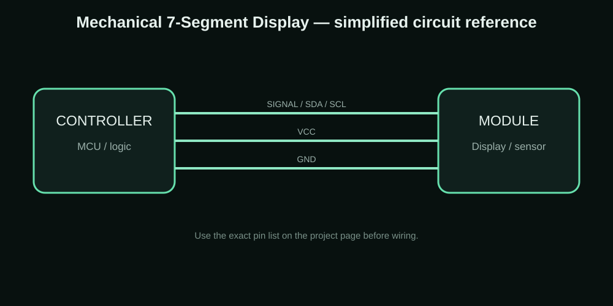

35-Servo Mechanical 7-Segment Display
A five-digit mechanical seven-segment display using 35 servos controlled through multiple PCA servo-driver boards.


The idea behind the project
This is one of my larger mechanical display ideas. Each digit uses seven servos, so five digits require 35 servos. The challenge is not only controlling the positions but also moving them in a controlled sequence so the power system is not hit with every servo at exactly the same moment.
Components I used
| Component | Purpose |
|---|---|
| 35 × SG90/MG90s servos | Seven segments × five digits |
| PCA9685/PCA9680 servo-driver boards | PWM servo control |
| 5 V high-current supply | Servo power |
| 4700 µF capacitors | Local bulk filtering |
| Fuse protection | Power branch protection |
| ESP32/Arduino controller | Logic and I2C control |
Connections
| Connection | Details |
|---|---|
| Controller SDA/SCL | I2C bus to the PCA boards |
| Servo V+ | Separate high-current 5 V servo supply |
| Servo GND | Common ground between controller and servo supply |
| PCA boards | Configured at the I2C addresses used by the build |
| Servo groups | 35 servos split across the three boards |
How I built and tested it
- Initialize the PCA boards and servo positions.
- Treat each digit as seven independent segments.
- Convert the requested number into the required segment states.
- Move segments with a controlled gap instead of commanding all 35 servos simultaneously.
- Update the digits in the chosen order for the speedometer-style effect.
- Repeat the process for the next number or serial command.
Problems, limits and things to check
Servo current is the main hardware concern. A high-current 5 V supply, correct grounding, branch protection and bulk capacitors are important. Timing gaps also help reduce sudden current demand, but they do not replace a correctly sized power supply.
What this project can teach you
- Mechanical displays
- Servo control
- PCA9685 multi-board I2C
- Power planning
- Sequential motion control
Downloads
The project ZIP keeps the available project resources together. For a new build, check the code, wiring and board pinout before uploading.
Download Project ZIP